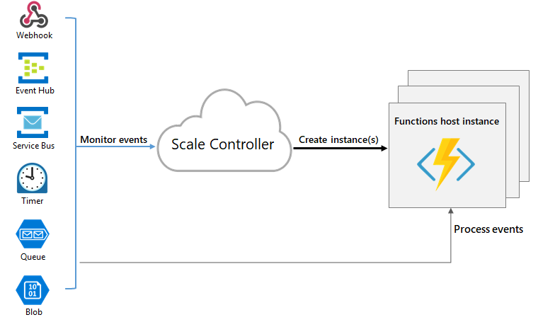

Azure Functions is anevent-driven,serverless compute option that doesn’t require maintaining virtual machines or containers.
With Azure Functions, an event wakes the function, alleviating the need to keep resources provisioned when there are no events.
Since the function runs only after an event is triggered and then all the resources are deallocated, you only pay for the CPU time used by the function.
Azure Functions supportstriggers, which are ways to start the execution of your code, and bindings, which are ways to simplify coding for input and output data.
Use cases
- you don’t care about the underlying infrastructure;
- you have to respond to an event;
- the work will take not more than a few seconds;
- you need automatic scalability;
Functions timeout
The functionTimeout property in the host.json project file specifies the timeout duration for functions in a function app. This property applies specifically to function executions. After the trigger starts function execution, the function needs to return/respond within the timeout duration.
Required storage account
On any plan, a function app requires a general Azure Storage Account, which supports Azure Blob, Queue, Files, and Table storage. This is because Functions rely on Azure Storage for operations such as managing triggers and logging function executions, but some storage accounts don’t support queues and tables.
The same storage account used by your function app can also be used by your triggers and bindings to store your application data. However, for storage-intensive operations, you should use a separate storage account.
Hosting plans
| Plan | Benefits | Available on | Scale out | Max # of instances | Function app timeout (minutes) |
|---|---|---|---|---|---|
| Consumption plan | It scales automatically, and you only pay for compute resources when your functions are running. Instances of the Functions host are dynamically added and removed based on the number of incoming events. | Windows, Linux | Event driven. Scale-out automatically, even during periods of high load. Azure Functions infrastructure scales CPU and memory resources by adding more instances of the Functions host, based on the number of incoming trigger events. | Windows: 200. Linux: 100. This is the max instances given on a per-function app basis. | 5 (default) to 10 (max) |
| Premium plan | Automatically scales based on demand using pre-warmed workers, which run applications with no delay after being idle, run on more powerful instances, and connect to virtual networks. | Windows, Linux | Event driven | Windows: 100. Linux: 20-100 Per-plan basis. | 30 (default) to unlimited |
| Dedicated plan | Run your functions within an App Service plan at regular App Service plan rates. Best for long-running scenarios where Durable Functions can’t be used. | Windows, Linux | Manual/autoscale | 10-20 | 30 (default) to unlimited |
| ASE | App Service Environment (ASE) is an App Service feature that provides a fully isolated and dedicated environment for securely running App Service apps at high scale. Note: you should configure this App Service Plan to be always-on in order to get have the trigger work immediately. | Manual/autoscale | 100 | ||
| Kubernetes | Fully isolated and dedicated environment running on top of the Kubernetes platform. | Direct or with Azure Arc | Event-driven autoscale for Kubernetes clusters using KEDA. | Varies by cluster |
Scaling
In the Consumption and Premium plans, Azure Functions scales CPU and memory resources by adding more instances of the Functions host. The number of instances is determined by the number of events that trigger a function.
Each instance of the Functions host in the Consumption plan is limited to 1.5 GB of memory and one CPU. An instance of the host is the entire function app, meaning all functions within a function app share resources within an instance and scale at the same time. Function apps that share the same Consumption plan scale independently.
In the Premium plan, the plan size determines the available memory and CPU for all apps in that plan on that instance.
Function code files are stored on Azure Files shares on the function’s main storage account. When you delete the main storage account of the function app, the function code files are deleted and can’t be recovered.
The Scale Controller is the component that monitors the rate of events and determines whether to scale out or scale in, using heuristics for each trigger type.
When there are no functions running within a function app, the number of instances can scale to zero. Then, the first request has a bit of latency because the function app must scale to one. This latency is called cold start.

Even though a function app can scale out to a max of 200 instances, a single instance can process more requests at a time, so there isn’t a hard limit on the number of concurrent executions.
For HTTP triggers, new instances are allocated, at most, once per second. For non-HTTP triggers, new instances are allocated, at most, once every 30 seconds.
You may need to define a limit to the maximum number of instances. You can define a value for the functionAppScaleLimit configuration:
0ornullto have an unrestricted number of instances;1to the max number of instances depending on the Plan (200 for Consumption, 100 for Premium).
Development
A function is made of:
- the code, which can be written in many languages;
- the configs, stored in the
function.jsonfile;
Some notes about the function.json file:
- It is automatically generated for compiled languages, using the annotations written in the function code;
- Must be created manually for scripted languages;
- Contains a node named
bindingswhich contains the trigger, the bindings, and configuration settings. Each function has exactly one trigger, but can have other bindings.
The function.json file has this shape:
{
"disabled": false,
"bindings": [
// ... bindings here
{
"type": "bindingType",
"direction": "in",
"name": "myParamName"
// ... more depending on binding
}
]
}The bindings node contains both the trigger and the other bindings. Each item requires at least these settings:
type: name of the binding/trigger;direction: indicates whether the binding is for receiving data into the function or sending data from the function. For example,inorout.name: name used for the binding.
Functions are grouped in a Function App. The Function App has some other configurations stored in the host.json file, which contains runtime-specific configurations.
Starting version 2.x, all functions in a function app must use the same programming language.
Triggers and bindings let you avoid hardcoding access to other services. Your function receives data (for example, the content of a queue message) in function parameters. You send data (for example, to create a queue message) by using the return value of the function.
Triggers:
- exactly one per function;
- can have associated data (a payload)
- the direction is always in
Bindings:
- allow you to connect to other resources;
- can be input bindings or output bindings;
- optional
- a function might have one or multiple input and/or output bindings
- some bindings have a inout direction.
- as output binding, you can use the return value of the function.
Example of function.json file with both input and output bindings:
{
"bindings": [
{
"type": "queueTrigger",
"direction": "in",
"name": "order",
"queueName": "myqueue-items",
"connection": "MY_STORAGE_ACCT_APP_SETTING"
},
{
"type": "table",
"direction": "out",
"name": "$return",
"tableName": "outTable",
"connection": "MY_TABLE_STORAGE_ACCT_APP_SETTING"
}
]
}Which, in C# can be expressed as
#r "Newtonsoft.Json"
using Microsoft.Extensions.Logging;
using Newtonsoft.Json.Linq;
// From an incoming queue message that is a JSON object, add fields and write to Table storage
// The method return value creates a new row in Table Storage
public static Person Run(JObject order, ILogger log)
{
return new Person() {
PartitionKey = "Orders",
RowKey = Guid.NewGuid().ToString(),
Name = order["Name"].ToString(),
MobileNumber = order["MobileNumber"].ToString() };
}
public class Person
{
public string PartitionKey { get; set; }
public string RowKey { get; set; }
public string Name { get; set; }
public string MobileNumber { get; set; }
}or, in a class library, you can define triggers and binding using C# attributes:
public static class QueueTriggerTableOutput
{
[FunctionName("QueueTriggerTableOutput")]
[return: Table("outTable", Connection = "MY_TABLE_STORAGE_ACCT_APP_SETTING")]
public static Person Run(
[QueueTrigger("myqueue-items", Connection = "MY_STORAGE_ACCT_APP_SETTING")]JObject order,
ILogger log)
{
return new Person() {
PartitionKey = "Orders",
RowKey = Guid.NewGuid().ToString(),
Name = order["Name"].ToString(),
MobileNumber = order["MobileNumber"].ToString() };
}
}
public class Person
{
public string PartitionKey { get; set; }
public string RowKey { get; set; }
public string Name { get; set; }
public string MobileNumber { get; set; }
}Notice that the Connection value refers to a configuration key, and does not contain the real connection string. The default configuration provider uses environment variables that are set in Application Settings when running in the Azure Functions service, or from the local settings file when developing locally.
Identity-based connections
Some functions may require the use of an identity instead of a secret:
- Identity-based connections use a Managed Identity;
- Identity-based connections are not supported by Durable Functions;
- By default, it uses the system-assigned identity. However, you can specify
credentialandclientIDto use a user-assigned identity; - When developing locally, the developer identity is used.
- Done by assigning a role in Azure Role-Based Access Control or specifying the identity in an access policy, depending on the service to which you’re connecting